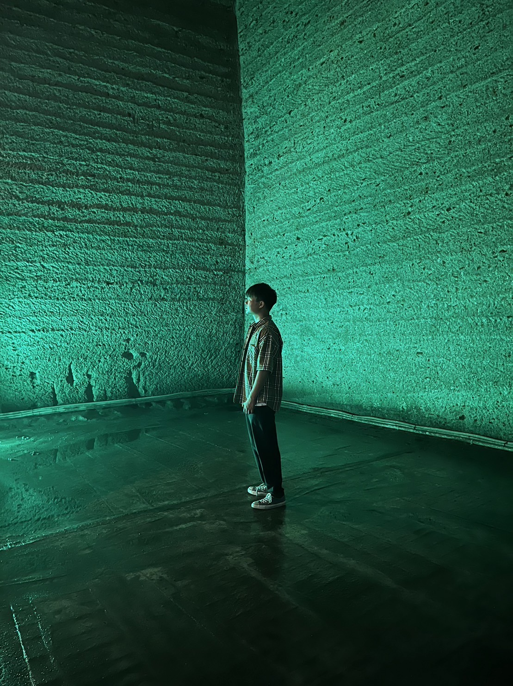
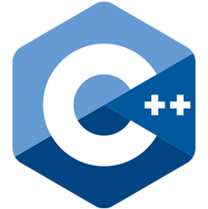
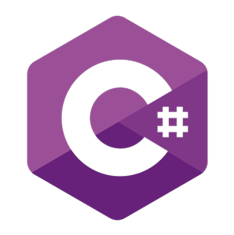
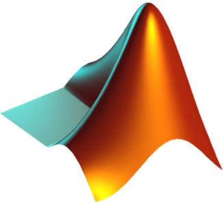
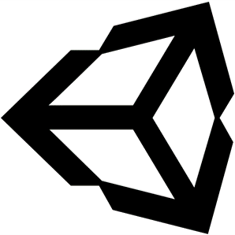
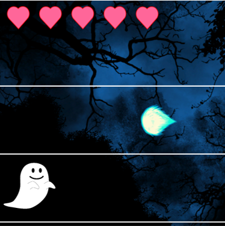
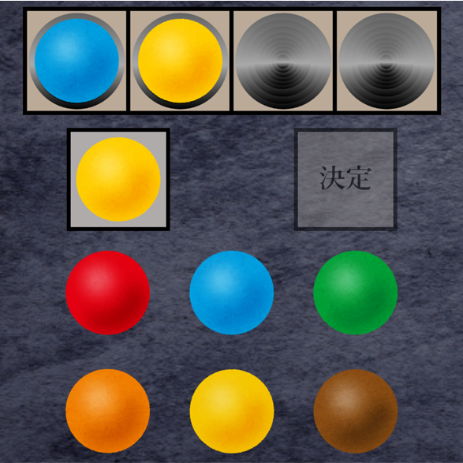
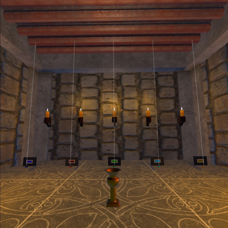
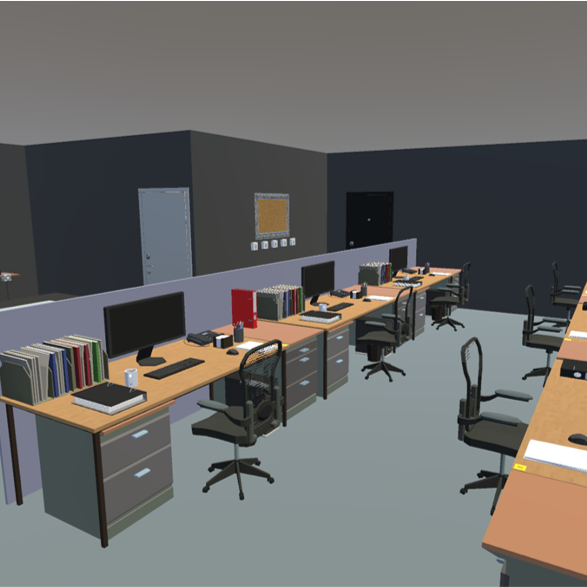

Python
Tkinter，画像処理，OpenCV，自動化処理など幅広く扱いました．また実験の自由課題では，カメラに対して黒色マーカを入力とするゲーム開発，レベルデザインも行いました．
ープロフィールー

芹澤尚舜 (Masatoshi SERIZAWA)
東京都立大学 システムデザイン学部 情報科学科
西内研究室 学部4年
生誕 : 2001年 東京都
ー経歴ー
2020年3月
高校では卓球部で部長を務め，部内リーグで優勝を勝ち取った．また，河合模試では理系(英語，数学)で校内順位1位や，英語 - 偏差値：67.4，数学 - 偏差値：70.2などを記録した．
2020年4月
3年次には，東京大学で行われているメタバース内でのE-Commerceの実現に向けた信頼性の高いRealistic-Avatarの研究プロジェクトに研究補助アルバイトとして参加．
2024年3月
総取得単位：124，GPA : 3.21（2023/09/23時点）
ー学術研究ー
研究補助 ー> メタバース内でのE-Commerceの実現に向けた信頼性の高いRealistic-Avatarの研究プロジェクト
日付 : 2022年09月01日 ～ 2023年02月28日
場所 : Tokyo, Japan
当時，東京都立大学 情報科学科に所属していたヤェムヴィボル先生にお誘いいただき，日本住宅ローンがスポンサー企業となっている研究プロジェクトに研究補助アルバイトとして参加しました．このときに初めてUnityを触り，アバタのモデリングやアバタの表情変化のためのモーフ設定，アニメーション設定，動的グラフ生成などについて学習しました．
学会参加 ー> 日本人間工学会アーゴデザイン部会コンセプト事例発表会
日付 : 2023年08月21日
場所 : Tokyo, Japan
私が所属している研究室では，学部4年生がこちらの学会に毎年参加しています．コンセプト事例発表会は研究のコンセプト段階での発表が認められており，実験の結果が出ていなくても研究の方向性について議論することができます．私はポスター発表形式で参加し，学生や教授の方から様々な意見を得ることができ，研究のその後に役に立ちました．
デモ展示 ー> URCF（超臨場感コミュニケーション産学官フォーラム）シンポジウム 2023
日付 : 2023年08月30日
場所 : Tokyo, Japan
東京都立大学, 筑波大学, 東京大学．"複数の実空間のVR歩行体験とマルチ視聴が可能なXRメタバース"と題して， 東京都立大学 local-5G project によって作成された，実空間において二重身体認知を実現するためのシステムのデモ展示に補佐として参加しました．こちらのシステムはセグウェイ型及び犬型の2台の代理身体ロボットを用いており，歩行感覚フィードバック及び視点共有機能を備えるシステムです．鋭い質問が多々あったのが印象的でした．
デモ展示 ー> 第28回日本バーチャルリアリティ学会大会（VRSJ2023）
日付 : 2023年09月12日 ～ 2023年09月14日
場所 : Tokyo, Japan
小島優希也, 島田匠悟, 米田悠人, 芹澤尚舜, 西内信之, 池井寧, YEM VIBOL. "複数リアル空間を体験するXRメタバース"と題して， 東京都立大学 local-5G project によって作成された，上記URCFと類似した内容のデモ展示に補佐として参加しました．URCFとの違いはロボットアームの稼働を行ったことや，代理身体ロボットのロコモーション手法を追加した点です．
ー開発環境ー
Python
Tkinter，画像処理，OpenCV，自動化処理など幅広く扱いました．また実験の自由課題では，カメラに対して黒色マーカを入力とするゲーム開発，レベルデザインも行いました．
C言語
主に講義内で使用しました．都立大に入学後，最初に学んだプログラミング言語がC言語でした．当時はコロナの影響でオンライン講義であり，プログラムをWordに書いて提出していました．
C++言語

AizuOnlineJudge (AOJ) で使用しており，これによりプログラミングスキルが伸びたと実感しています．AOJでは主に入門とアルゴリズムとデータ構造，整数論を課題と自習で解き進めていました．
C#言語

研究補助アルバイトの時にUnityを扱い，そこで初めてC#言語を扱いました．先輩にオススメされたUnityの教科書で基本を学習し，CSVファイルへの出力や，アバタ制御などを扱いました．
MATLAB

プログラミング実験や音声解析，機械学習などを行う目的で使用しました．簡易データを用いたクラスタリング等のパターン認識や，実際のデータセットを用いた手書き数字認識を行いました．
Unity

研究補助アルバイトの時にUnityを初めて扱い，そこでゲーム開発の楽しさやVRに興味を持ちました．研究で用いる実験環境の構築や，趣味で行っているゲーム作成の際に使用しています．
ー資格 etc.ー
| 取得年月日 |
資格 |
|---|---|
| 2019年 03月 08日 | 実用英語技能検定 2級 合格 |
| 2020年 06月 11日 | 普通自動車運転免許証 取得 |
| 2023年 01月 29日 | TOEIC Listening & Reading Test TOTAL SCORE 805 （L : 430 & R : 375） |
| 2023年 03月 05日 | TOEIC Listening & Reading Test TOTAL SCORE 875 （L : 460 & R : 415） |
| 2023年 09月 26日 | 基本情報技術者試験 合格 |
ーUnity Gameー

Avoid the Attack
Unityの教科書を読み終えた後に，その知識を活かして1から自分で作成したゲームがこのゲームです．プレイヤーはオバケになって不気味な森の中で右側から飛んでくる攻撃をできるだけ多くかわすゲームです．ライフは5つあり，1度攻撃に当たるとライフは1つ減り，0になるとゲーム終了です．このゲームではレベルデザインも行っており，攻撃は10秒ごとに速度が上がっていきます．操作が単純であるため誰でも楽しめると思います！ぜひプレイしてみてください！
操作：上下カーソルキー

HIT & BLOW
6色のボール中から，コンピュータによってランダムに選出された重複しない4つのボールの色と位置を推測するゲームです．色と位置が一致しているとHit，色は一致しているが位置が違うとBlowとなります．4つのボールを選択後，そのボール配置でのHitとBlowの数がヒントとして与えられるので，それをヒントに推測してください．理論的には5回の選択で，コンピュータが選出したボールの色と順番を当てることができます！対戦ゲームですが，1人でプレイしても十分に楽しめるゲームです！
操作：マウス，キーボード

Escape from Ancient Room
AppLabのThe Great Escape: Dragon's Dungeonという脱出ゲームの中のとあるギミックを体験し，この箇所なら自分でも作れると考えUnityを使って初めて作成したVRゲームがこの脱出ゲームです．VRゲームのため，物体を掴むなどのインタラクション操作をPC上で行うことはできないのですが，PCでも少し空間を味わえるようにゲーム空間内を移動できるようにプログラムを変更しました．...をすると...．VR空間での仕掛けがwebブラウザ上でも楽しめるかもしれません！
操作：カーソルキー，マウス

Escape from Office
Escape from Ancient Room を作成したのち，より本格的なVR脱出ゲームを作成したいと思い，作り上げたのがこの Escape from Office です．上のゲームと同様にPCでも少し空間を味わえるようにプログラムを改変しました．やや難易度の高い脱出ゲームとなっていて，タイトルシーンからゲームシーンへの遷移演出もこだわりました．この演出はwebブラウザ上でも楽しめるため，ぜひPlayボタンを押して体験してみてください．なお，脱出のキーとなるobjectは非表示となっております．予めご了承ください．
操作：カーソルキー，マウス，キーボード